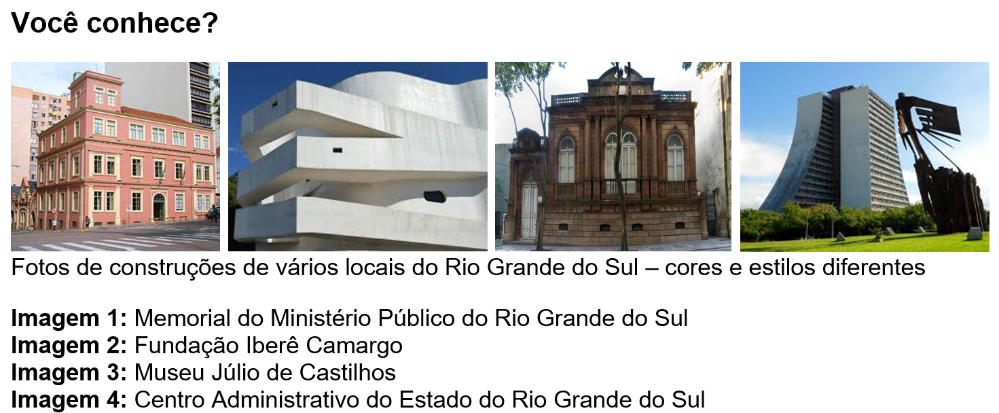
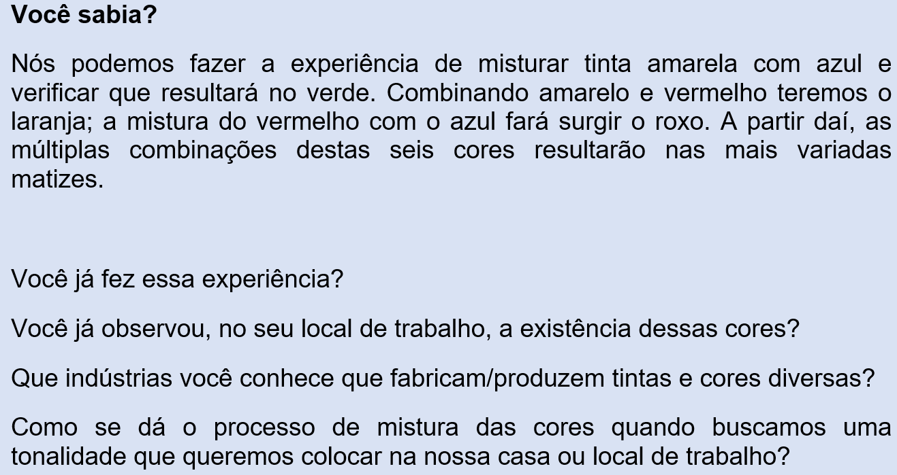
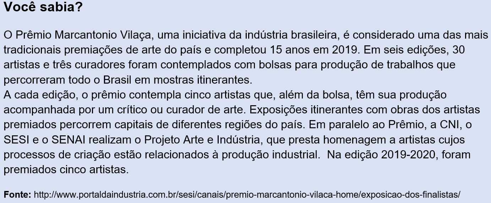
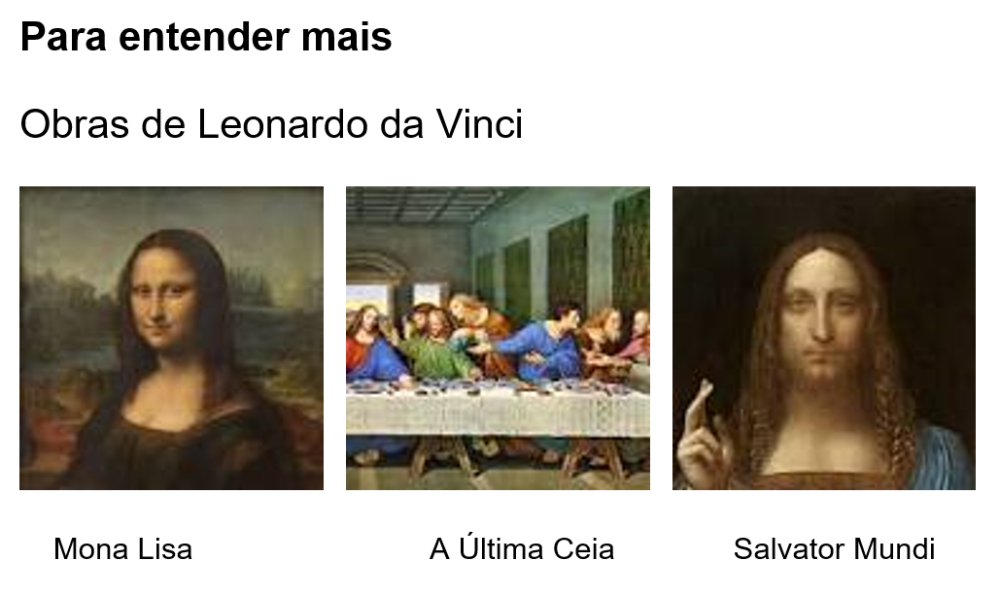
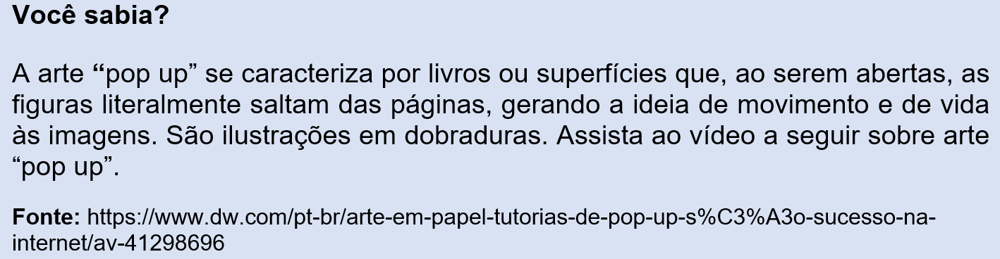

Capítulo 1: A história da arte, as cores e a construção civil
Questão-problema:
Por que as construções têm estilos e cores diferentes?
Há alguma relação entre o uso de cores e os aspectos culturais de um povo?
Qual o papel da indústria na construção civil?
Contextualizando:

Reconstruindo conhecimentos:
Há um velho ditado que diz: “à noite todos os gatos são pardos”. É a mais absoluta verdade, pois não enxergamos cores na ausência da luz. O belo fenômeno físico do arco-íris sintetiza a variada gama de cores existentes na natureza, possíveis de serem vistas em função da presença de uma maior quantidade de água na atmosfera. O arco-íris nos revela a beleza do vermelho, do laranja, do amarelo, do verde, do azul e do violeta. Teorias nos mostram que a percepção das cores é decorrente de fenômenos físicos relacionados com a existência da luz.
Percepção das cores
Muitos estudiosos dedicaram-se ao estudo das cores e sua relação com a luz solar, como Isaac Newton, Leonardo da Vinci e Goethe, por exemplo.
Relembrando a história...
Isaac Newton
Foi o primeiro a observar a existência do espectro visível da luz solar e a natureza das cores.
Fonte: https://escolaeducacao.com.br/isaac-newton/
Leonardo da Vinci

Seus estudos sobre a perspectiva, o contraste entre luz e sombra, bem como os desenhos, diagramas científicos e pensamentos sobre a pintura encontrados em seus cadernos, formaram uma contribuição para os artistas que o seguiram.
Fonte: https://escolaeducacao.com.br/leonardo-da-vinci/
Goethe
Johann Wolfgang Von Goethe foi um importante romancista, dramaturgo e filósofo alemão. Escreveu também sobre temas científicos. Defendia uma nova explicação para a teoria das cores, em oposição à defendida por Isaac Newton.
Fonte: https://www.suapesquisa.com/pesquisa/goethe.htm
São chamadas de primárias, as cores (tintas, pigmentos) que não dependem de outras para sua formação e que, misturadas, formam as cores secundárias.
Cores Primárias – São o amarelo, o azul e o vermelho.
Fachada de prédio pintado em amarelo, azul e vermelho – cores primárias.

A pintura, o desenho e a escultura estão dentro do campo das Artes Visuais, atividades humanas praticadas desde os tempos pré-históricos. Pesquisas recentes mostraram que existem pinturas rupestres com mais de 42 mil anos. Elas estão espalhadas por grutas e cavernas de todo o mundo. Na Ásia, na África, na Europa e na América, incluindo o Brasil.
Imagens de pinturas rupestres e o uso das cores.
É importante conhecer um pouco sobre as Artes Visuais porque convivemos com elas, fazem parte da nossa vida. Encontramos esculturas nas ruas e praças das cidades, vemos reproduções de pinturas e desenhos em camisetas, toalhas de mesa e em comerciais de TV, por exemplo.

A Arte, num entendimento amplo, sempre foi produzida por homens e mulheres que não tiveram medo de expor suas ideias, suas angústias, seus conflitos, suas diferenças. Artistas do passado – como Leonardo da Vinci – e os que atuam hoje em nossas cidades, mesmo que não os conheçamos, ousaram avançar na pesquisa de novos materiais e de novas técnicas. Eles contribuíram para, a partir dos conhecimentos acumulados do passado, inventar; criar o novo – que por si só é transformador.

Os desenhos e as pinturas são feitos a partir de pontos e linhas dos mais variados tipos. Na verdade, as linhas são pontos em movimento. Quando se firma o lápis (ou um pedaço de carvão) sobre um suporte (folha, parede, muro, calçada) ou o pincel sobre uma tela, define-se um ponto. Continuando esse ponto haverá uma linha e o desenho ou pintura estará começando.

Conforme os artistas vão mudando suas técnicas – a forma de se expressar – estudiosos vão organizando essas manifestações em períodos. Assim, embora existam vários períodos artísticos, estudaremos nesse momento apenas dois: a arte pré-colombiana e o período impressionista.
Divisões na História da Arte (em geral feitas para fins de estudo) e principais períodos da Arte no Ocidente.
• Arte na Pré-Historia
• A Pré-História Latino-Americana
• Arte no Egito
• Arte na Grécia Antiga
• Arte na Roma Antiga
• Arte Pré-Colombiana
• Arte Bizantina
• Arte Oriental Islâmica e no Extremo Oriente
• Arte Medieval
• Arte Pré-Colonial no Brasil
• Arte Chinesa
• Arte na Renascença
• Arte no Maneirismo
• Arte no Barroco Europeu
• Arte Barroca no Brasil
• Arte do Rococó
• Arte do Neoclassicismo
• Arte do Romantismo
• Arte Acadêmica no Brasil
• Arte do Realismo
• Arte do Japão no Século XIX
• Arte do Impressionismo
• Pós-Impressionismo
• Pré-Modernismo no Brasil
• O Estilo Art Nouveau
• Arte Africana
• Fauvismo
• Cubismo
• Expressionismo
• O Surrealismo e outras tendências
• Modernismo no Brasil
• Arte Abstracionista
• Pop Art – Pós-Modernismo – Grafite – Art Naïf
A arte Pré-colombiana
Considera-se arte pré-colombiana as manifestações artísticas dos povos nativos da América espanhola antes da chegada de Cristóvão Colombo, em 1492. Tudo o que resta das grandes civilizações do período anterior à colonização do continente americano pelos europeus é sua "arte". Neste caso "arte" compreende objetos com funções definidas, em geral mágica ou religiosa, e também artigos simplesmente belos, criados para decoração. Fazem parte do universo artístico dessas civilizações tanto os templos e casas quanto as esculturas, relevos, pinturas, utensílios domésticos, objetos ornamentais, amuletos e tecidos. Descobertas arqueológicas indicam que o homem está presente na América há pelo menos 20 mil anos. Contudo, são três as principais civilizações ameríndias conhecidas: a maia, os astecas e os incas.
Fonte: ARTE pré-colombiana. In: ENCICLOPÉDIA Itaú Cultural de Arte e Cultura Brasileiras. São Paulo: Itaú Cultural, 2020. Disponível em: . Acesso em: 22 de Fev. 2020. Verbete da Enciclopédia.
ISBN: 978-85-7979-060-7
A arte do Impressionismo
O impressionismo foi um movimento artístico que se refletiu no campo da arte, revolucionando as técnicas de pintura e até mesmo a música. O impressionismo tem como objetivo, como diz a própria palavra, “impressionar” aquele que aprecia uma obra ou escuta uma música. O movimento impressionista, influenciou as tendências da arte do século XX no qual os artistas não estavam presos a técnicas ou teorias, mas sim à expressão prática, provocando naquele que vê ou escuta, sentimentos diversos. Os principais artistas do movimento impressionista são: Claude Monet, Pierre-Auguste Renoir, Edgar Degas, Édouard Manet, entre outros.
Algumas obras impressionistas
Impressão, nascer do sol de Claude Monet
As duas irmãs, de Pierre-August Renoir
ReConstruindo conhecimentos – A Arte no Rio Grande do Sul
O estudo e o desenvolvimento da Arte em nosso Estado tem pouco mais de cem anos. Do ponto de vista cultural e artístico foi marcante o que aconteceu nas Missões Jesuíticas (Séculos XVII e XVIII). Mas foi um evento isolado. Depois disso, só em meados do Século XIX surgem algumas pinturas decorando igrejas, prédios públicos ou palacetes. Pedro Weingärtner, o artista que se destaca nesse período, nasceu em 1853 e conseguiu realizar sua formação na Europa. As primeiras discussões sobre a eventual criação de uma escola de artes são de 1883. O atual Instituto de Artes da UFRGS, uma das escolas de Artes mais tradicionais do Brasil, foi fundado em 1908 com o nome de “Instituto de Bellas Artes”.
Pedro Weingärtner: Tempora mutantur, 1898, óleo sobre tela, acervo do MARGS
,Mesmo que não conte com um grande número de museus de arte, o Rio Grande do Sul já realizou dez edições da Bienal do Mercosul, sendo bastante significativa a atividade no campo das Artes Visuais por aqui.
Praticando - Reflexão e ação
Depois de conhecermos um pouco sobre Arte, sua história, principais artistas, períodos e movimentos artísticos, é hora de refletir e tentar fazer relações com o nosso cotidiano, o nosso dia a dia, seja na cidade, no local de trabalho ou até mesmo na sua casa.
Onde você mora, há algum museu de arte? Você já o visitou?
Quais museus você já ouviu falar?
No seu local de trabalho, há alguma obra de arte exposta?
Você consegue identificar de que setor da indústria vêm os materiais das obras de arte que você conhece?
Seguem algumas obras de artistas gaúchos. Tente identificar qual ou quais material/materiais eles usaram.
Sem título, 1990. Alfredo Nicolaiewski
O Laçador, 1958. Antônio Caringi
Leopardo, 1980. Sônia Ebling
O que aprendi:
Sobre as artes visuais
Tendo entrado em contato com o mundo da Arte, você viu, neste capítulo, os estudos das cores, da pintura, escultura e formas. Sua relação com a construção civil e a maneira como construímos nossas casas, com o uso das cores e a evolução das artes plásticas, evidencia-se em cada detalhe que observamos. Basta um olhar mais atento para percebermos que toda a história da Arte se revela no nosso cotidiano, apresentando as múltiplas formas da Arte e suas contribuições para o progresso e evolução da sociedade. Cabe, portanto, observarmos os prédios, as casas, os formatos das portas, janelas, portões (por exemplo) e as cores utilizadas para tentarmos fazer relações com o que foi aprendido até agora. Vamos lá?!